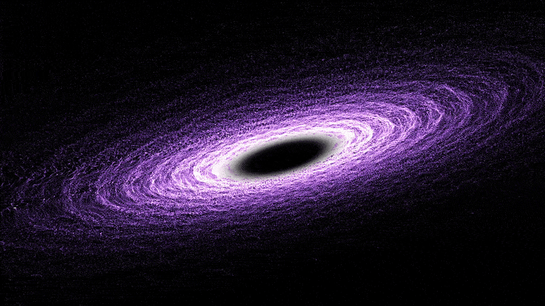

Black Holes

Don't let the name fool you: a black hole is anything but empty space. Rather, it is a great amount of matter packed into a very small area - think of a star ten times more massive than the Sun squeezed into a sphere approximately the diameter of New York City. The result is a gravitational field so strong that nothing, not even light, can escape. In recent years, NASA instruments have painted a new picture of these strange objects that are, to many, the most fascinating objects in space.
The idea of an object in space so massive and dense that light could not escape it has been around for centuries. Most famously, black holes were predicted by Einstein's theory of general relativity, which showed that when a massive star dies, it leaves behind a small, dense remnant core. If the core's mass is more than about three times the mass of the Sun, the equations showed, the force of gravity overwhelms all other forces and produces a black hole.Scientists can't directly observe black holes with telescopes that detect x-rays, light, or other forms of electromagnetic radiation. We can, however, infer the presence of black holes and study them by detecting their effect on other matter nearby. If a black hole passes through a cloud of interstellar matter, for example, it will draw matter inward in a process known as accretion. A similar process can occur if a normal star passes close to a black hole.
In this case, the black hole can tear the star apart as it pulls it toward itself. As the attracted matter accelerates and heats up, it emits x-rays that radiate into space. Recent discoveries offer some tantalizing evidence that black holes have a dramatic influence on the neighborhoods around them - emitting powerful gamma ray bursts, devouring nearby stars, and spurring the growth of new stars in some areas while stalling it in others.
One Star's End is a Black Hole's Beginning
Most black holes form from the remnants of a large star that dies in a supernova explosion. (Smaller stars become dense neutron stars, which are not massive enough to trap light.) If the total mass of the star is large enough (about three times the mass of the Sun), it can be proven theoretically that no force can keep the star from collapsing under the influence of gravity. However, as the star collapses, a strange thing occurs. As the surface of the star nears an imaginary surface called the "event horizon," time on the star slows relative to the time kept by observers far away. When the surface reaches the event horizon, time stands still, and the star can collapse no more - it is a frozen collapsing object.
Even bigger black holes can result from stellar collisions. Soon after its launch in December 2004, NASA's Swift telescope observed the powerful, fleeting flashes of light known as gamma ray bursts. Chandra and NASA's Hubble Space Telescope later collected data from the event's "afterglow," and together the observations led astronomers to conclude that the powerful explosions can result when a black hole and a neutron star collide, producing another black hole.
Babies and Giants
Although the basic formation process is understood, one perennial mystery in the science of black holes is that they appear to exist on two radically different size scales. On the one end, there are the countless black holes that are the remnants of massive stars. Peppered throughout the Universe, these "stellar mass" black holes are generally 10 to 24 times as massive as the Sun. Astronomers spot them when another star draws near enough for some of the matter surrounding it to be snared by the black hole's gravity, churning out x-rays in the process. Most stellar black holes, however, are very difficult to detect. Judging from the number of stars large enough to produce such black holes, however, scientists estimate that there are as many as ten million to a billion such black holes in the Milky Way alone.
On the other end of the size spectrum are the giants known as "supermassive" black holes, which are millions, if not billions, of times as massive as the Sun. Astronomers believe that supermassive black holes lie at the center of virtually all large galaxies, even our own Milky Way. Astronomers can detect them by watching for their effects on nearby stars and gas.